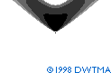

Shadow Variations
from Wind Turbines
Monthly
Shadow Variation
 This movie shows the areas affected
by shadow casting from a wind turbine. The movie shows how the area varies
month by month - in this case in relatively high latitudes (55°) in
the Northern hemisphere. The darkest areas represent the areas with most
shadows.
This movie shows the areas affected
by shadow casting from a wind turbine. The movie shows how the area varies
month by month - in this case in relatively high latitudes (55°) in
the Northern hemisphere. The darkest areas represent the areas with most
shadows.
 In winter the sun stays in the Southern part of the sky, and the shadows
are distributed in a V-shaped area to the North of the turbine.
In winter the sun stays in the Southern part of the sky, and the shadows
are distributed in a V-shaped area to the North of the turbine.
 In summer the sun rises very early in the morning to the Northeast and
sunset is in the Northwest. This means that the summer shadows will be distributed
in an A-shaped area, with the turbine in the tip of the "A".
In summer the sun rises very early in the morning to the Northeast and
sunset is in the Northwest. This means that the summer shadows will be distributed
in an A-shaped area, with the turbine in the tip of the "A".
 In locations closer to the equator there will be far less shadow North
and South of the turbine.
In locations closer to the equator there will be far less shadow North
and South of the turbine.
Shadow Geometry Varies by Latitude

Each latitude on the globe has its own shadow signature in terms of the
area affected by a certain period of shadows from an object (30 hours per
year). Close to the equator the signature resembles a butterfly. Farther
away from the equator it becomes more kidney-shaped, and close to the poles
it almost becomes a circle.
 All of the graphs above were computed using the shadow calculator on
this web site, and assume a "worst case" or a random rotor position.
All of the graphs above were computed using the shadow calculator on
this web site, and assume a "worst case" or a random rotor position.
Shadow Size Grows with Rotor Diameter
The size of the rotor shadow and the number of shadow minutes per year in
the vicinity of the turbine varies in proportion to the rotor area, as shown
in the three pictures above. The red areas indicate the annual shadow patterns
with more than 30 hours of shadow (worst case) from wind turbine rotors
of 43, 53, and 63 m mounted on 50 m towers and computed for 55° latitude.
Hub Height of Minor Importance

 The hub height
of a wind turbine is of minor importance for the shadow from the rotor.
The same shadow will be spread over a larger area, so in the vicinity of
the turbine, say, up to 1,000 m, the number of minutes per year with shadows
will actually decrease. The four pictures show shadow casting during a year
(worst case) from a wind turbine with a 43 m rotor diameter, placed with
four different hub heights and computed for 55° latitude. The red areas
represent areas with more than 30 hours of shadows.
The hub height
of a wind turbine is of minor importance for the shadow from the rotor.
The same shadow will be spread over a larger area, so in the vicinity of
the turbine, say, up to 1,000 m, the number of minutes per year with shadows
will actually decrease. The four pictures show shadow casting during a year
(worst case) from a wind turbine with a 43 m rotor diameter, placed with
four different hub heights and computed for 55° latitude. The red areas
represent areas with more than 30 hours of shadows.
 If you are farther away from a wind turbine rotor than about 500-1000
metres, the rotor of a wind turbine will not appear to be chopping the light,
but the turbine will be regarded as an object with the sun behind it. Therefore,
it is generally not necessary to consider shadow casting at such distances.
If you are farther away from a wind turbine rotor than about 500-1000
metres, the rotor of a wind turbine will not appear to be chopping the light,
but the turbine will be regarded as an object with the sun behind it. Therefore,
it is generally not necessary to consider shadow casting at such distances.

|
Back | Home |
Forward |
© Copyright 1998 Soren Krohn. All rights reserved.
Updated 26 September 2000
http://www.windpower.org/tour/env/shadow/shadow2.htm